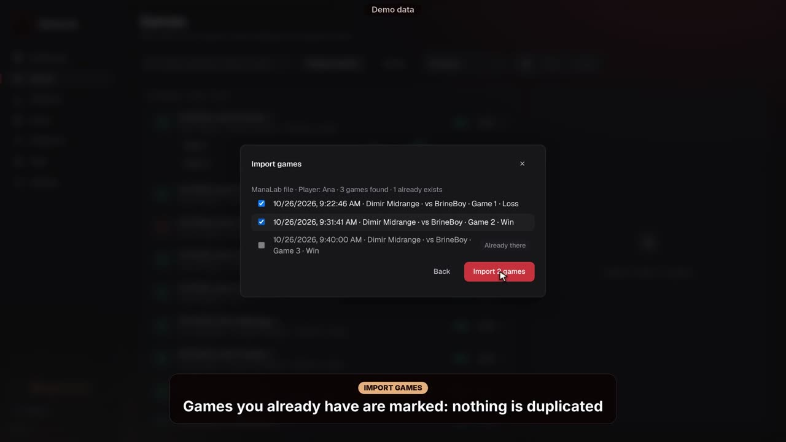
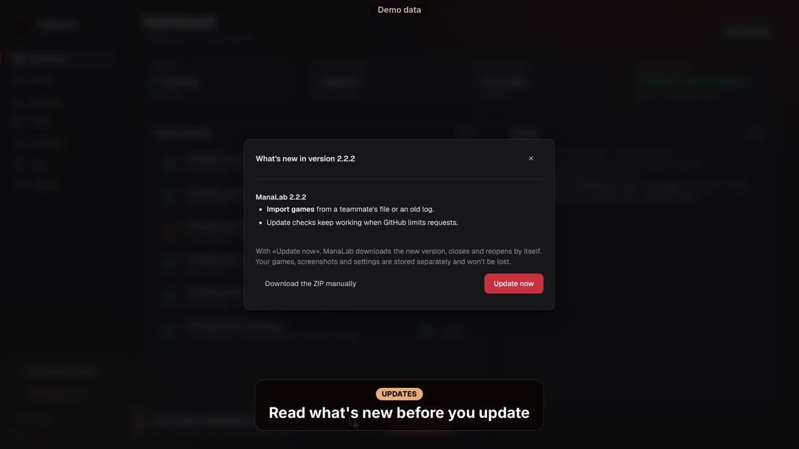

ManaLab 가이드
앱의 각 기능이 하는 일과 사용 방법입니다. 주요 기능과 AI 코치를 중심으로 설명합니다.
ManaLab이란
ManaLab은 MTG Arena에서 진행한 모든 대전을 PC에 저장하고 무엇이 효과가 있는지 보여줍니다. 덱별, 상대별, 매치업별 승률, 멀리건, 실수, 사이드보드 변경 내역을 확인할 수 있습니다.
앱은 무료입니다. 유료인 부분은 AI 패배 분석뿐이며, 월 5유로입니다.
처음 시작하기
- 휴대용 버전(ZIP)을 내려받아 압축을 풀고 ManaLab을 엽니다. 설치는 필요 없습니다.
- Arena에서 옵션 › 계정으로 이동해 «Detailed Logs (Plugin Support)»를 켭니다. 그다음 Arena를 다시 시작하세요. 이 설정이 없으면 ManaLab이 대전을 읽을 수 없습니다.
- 처음 실행하면 시작 가이드가 열립니다. 설정 › 정보에서 다시 볼 수 있습니다.
- 대시보드에서 «기록 시작»을 누르세요. 이후 모든 대전이 자동으로 저장됩니다.
대시보드: 기록 상태
대시보드에서 ManaLab이 제대로 기록하고 있는지 확인할 수 있습니다. 카드는 네 개입니다:
- 기록: 실행 중인지 중지됐는지.
- Arena 창: ManaLab이 Arena 창을 인식하는지(스크린샷에 필요).
- 카드 데이터베이스: 카드 정보가 최신인지.
- 현재 대전: 지금 진행 중인 대전.
그 아래에는 최근 대전과 최근 활동이 보입니다.

대전: 기록
전체 대전 기록이 여기에 있습니다. 상대, 덱, 이벤트로 검색하고 전체, 승리, 패배로 필터링할 수 있습니다. 대전을 열면 다음 탭이 나타납니다:
- 대전: 매치 요약과 게임 목록.
- 게임: 시작 핸드, 선공 여부, 멀리건, 진행 내용.
- 리플레이: 게임을 턴마다 단계별로 다시 보기.
- 상대: 본 상대 카드.
- 분석: AI 설명(구독자 전용).
- 메모: 실수와 메모.


웹에서 영상 보기: https://manalab.es/guia/guia_manalab_ko.html#video-replay

웹에서 영상 보기: https://manalab.es/guia/guia_manalab_ko.html#video-opening-hand-mulligans

웹에서 영상 보기: https://manalab.es/guia/guia_manalab_ko.html#video-opponent
대전 가져오기
대전에서 «가져오기…»를 누르면 두 곳에서 대전을 가져올 수 있습니다. 다른 사람이 보내 준 .manalab 파일(각 대전의 «⋯» 메뉴에 있는 «경기 내보내기»로 만듦)이나, ManaLab을 닫았거나 다른 PC에서 플레이한 대전이 들어 있는 Arena의 Player.log입니다.
가져올 대전을 직접 고르며, 이미 있는 대전은 표시되므로 중복되지 않습니다. 가져온 대전에는 리플레이, 핸드, 멀리건, 덱, 메모, 코치 태그가 있지만 스크린샷과 AI 분석은 없습니다.
다른 플레이어의 대전에는 표시가 붙고 내 통계, 추세, 보고서, 팀에 포함되지 않습니다. 내 로그에서 가져온 대전은 내 것으로 집계됩니다.

웹에서 영상 보기: https://manalab.es/guia/guia_manalab_ko.html#video-import-games
하이라이트
게임 중에 원하는 순간의 스크린샷을 저장할 수 있습니다. 자동 스크린샷이 꺼져 있어도 작동합니다.
- F8을 누르세요(키는 설정 › 하이라이트에서 바꿀 수 있습니다).
- 또는 Arena 왼쪽 위에 나타나는 «순간 캡처» 버튼을 누르세요.
- 또는 ManaLab 사이드바의 «순간 캡처»를 누르세요.
버튼은 게임이 진행 중일 때만 보입니다. 스크린샷은 시작 손패, 멀리건과 함께 저장됩니다.
나중에 게임 탭에서 스크린샷을 열고 그 순간에 대한 메모를 쓸 수 있습니다.

웹에서 영상 보기: https://manalab.es/guia/guia_manalab_ko.html#video-capture-moment
메모와 실수
각 게임의 메모 탭에서 저지른 실수를 태그와 함께 표시하고, 기억하고 싶은 내용을 적을 수 있습니다. 이 실수 기록은 코치에게 보낼 보고서와 반복 실수 통계의 기초가 됩니다.
덱
ManaLab이 감지한 덱 목록이 나옵니다. 이 화면에서 할 수 있는 일:
- 덱 이름 바꾸기, 또는 Arena에 있는 이름 사용하기.
- ManaLab이 잘못 분류한 아키타입 수정 및 대전 재분류.
- 메타에서 내 덱의 위치 확인하기.
통계: 승률
결과를 다음 기준으로 정리해 보여줍니다:
- 덱.
- 상대.
- 멀리건.
- 선공 / 후공.
- 최근 날짜.
매치업 표에서는 어떤 덱으로 이기고 어떤 덱으로 지는지 알 수 있습니다. 여기서 코치용 데이터를 내보낼 수도 있습니다.


웹에서 영상 보기: https://manalab.es/guia/guia_manalab_ko.html#video-statistics
사이드보드: 매치업별 계획
각 매치업마다 넣을 카드(IN)와 뺄 카드(OUT)를 적고, 내 계획(내 계획)을 작성할 수 있습니다. 이전 변경의 결과도 함께 보여줍니다.
구독 중이라면 «AI에게 계획 요청»을 눌러 그 매치업 대전을 바탕으로 한 사이드보드 계획을 받을 수 있습니다.

웹에서 영상 보기: https://manalab.es/guia/guia_manalab_ko.html#video-sideboard-guide
AI 코치: 패배 분석
AI 코치는 패배의 원인과 다음에 시도할 방법을 설명합니다. 구독자 전용이며 월 5유로입니다.
- Ko-fi에서 구독하세요(설정 또는 분석 탭의 «Ko-fi에서 구독» 버튼). 또는 patreon.com/ManaLab 에서 5달러 이상의 Patreon 티어(Researcher 또는 Lab Partner)를 선택하세요. 어느 쪽이든 코드가 이메일로 옵니다.
- 설정 › AI 분석으로 이동해 «구독 코드» 칸에 붙여 넣고 저장하세요.
- 대전에서 패배한 경기를 열고 분석 탭으로 이동하세요.
- 원하면 구체적인 질문을 적으세요. 예: «멀리건을 했어야 했나?» 또는 «5턴에 공격을 잘못했나?».
- «AI로 분석»을 누르세요. 몇 초 걸립니다. 답변은 저장되므로 같은 게임에 두 번 비용을 내지 않습니다.
각 코드에는 하루 한도가 있습니다(기본 하루 30회). 탭에서 남은 횟수를 볼 수 있습니다.
분석하는 게임의 데이터만 전송됩니다: 덱, 핸드, 사이드보드, 본 상대 카드, 게임 진행 기록. 이름, 상대 이름, 전체 로그 파일은 전송되지 않습니다.
코치용 내보내기와 팀
통계의 «코치용 내보내기»는 요약, 매치업, 표시한 실수, 메모가 담긴 대전을 한 페이지로 만듭니다. 브라우저에서 열리며, 거기서 인쇄하거나 PDF로 저장해 코치에게 보낼 수 있습니다.
대전에서 «세션 준비»를 누르면 검토할 게임을 골라 손패, 멀리건, 핵심 순간, 턴별 요약, 메모, 하이라이트를 담은 보고서 하나를 만들어 줍니다. 상대 이름은 숨길 수 있습니다. 브라우저에서 열리고 오프라인으로 작동하며, 인쇄하거나 PDF로 저장할 수 있습니다.

웹에서 영상 보기: https://manalab.es/guia/guia_manalab_ko.html#video-prepare-session
팀 메뉴에서는 공유 폴더(Google Drive, Dropbox, OneDrive)를 통해 대전과 메모를 팀과 공유할 수 있습니다. 각자 자신의 하위 폴더에만 씁니다. 스크린샷도 메모와 함께 공유되며(설정 › 팀에서 끌 수 있음), 상대 이름을 가릴 수도 있습니다.
팀 화면에서는 팀원의 각 게임을 내 게임과 같은 수준으로 볼 수 있습니다: 손패, 메모가 달린 스크린샷, 리플레이, 상대 덱, 메모. 코치라면 메모 탭에 자신의 메모를 씁니다.

웹에서 영상 보기: https://manalab.es/guia/guia_manalab_ko.html#video-coach-tags-trends-team
설정
- 언어: ManaLab은 9개 언어를 지원합니다.
- 게임 중 오버레이: 플레이하는 동안 정보를 보여줍니다.
- 스크린샷, 그리고 카드가 없을 때 Scryfall 검색.
- Player.log 경로(자동으로 찾지 못한 경우).
- AI 분석: 구독 코드를 여기에 붙여 넣습니다.
- Ko-fi로 후원하고 시작 가이드 다시 보기.
- 새 버전 알림: 새 버전이 나오면 ManaLab이 알려 주고 새 기능을 보여 줍니다.

웹에서 영상 보기: https://manalab.es/guia/guia_manalab_ko.html#video-in-game-overlay
ManaLab 업데이트
버전 2.1.3부터 ManaLab은 스스로 업데이트합니다. 실행할 때와 하루에 한 번 새 버전이 있는지 확인하고, 있으면 왼쪽 아래에 알림이 표시됩니다.
- 알림에서 «새 기능 보기»를 누르면 내용을 읽을 수 있습니다.
- «지금 업데이트»를 누르세요. ManaLab이 새 버전을 다운로드하고 자동으로 닫혔다가 업데이트된 상태로 다시 열립니다. Windows 경고는 표시되지 않습니다.
게임, 스크린샷, 설정, 구독 코드는 %LOCALAPPDATA%\ManaLab에 따로 저장되어 있어 업데이트해도 사라지지 않습니다.
2.1.0, 2.1.1 또는 2.1.2를 쓰고 있다면(창이 표시되지 않고 닫히는 문제가 있었습니다) 마지막으로 한 번 직접 업데이트하세요. manalab.es에서 ZIP을 다운로드하고, 마우스 오른쪽 클릭 › 속성 › «차단 해제» 체크 › 확인, ManaLab을 닫은 뒤 ZIP을 폴더에 덮어써서 압축을 푸세요.
설정 › 정보 › «업데이트 확인»에서 언제든지 확인할 수 있고, «새 버전이 나오면 알려 주기»로 알림을 끌 수 있습니다.
버전 2.0.1 이하를 쓰고 있다면 알림이 보이지 않습니다. manalab.es에서 최신 버전을 다운로드하세요.

웹에서 영상 보기: https://manalab.es/guia/guia_manalab_ko.html#video-in-app-updates
개인정보
데이터는 PC에 그대로 남습니다. ManaLab은 Arena의 메모리를 읽지 않으며 Arena 서버에 연결하지 않습니다.
컴퓨터 밖으로 나가는 것은 AI 분석뿐이며, 요청할 때만 전송됩니다.